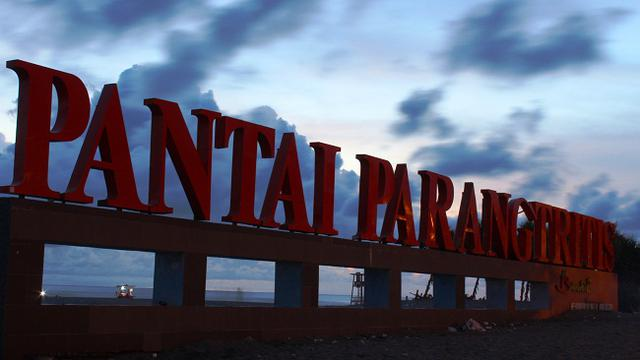

Abaikan Papan Peringatan, 2 Wisatawan Terseret Ombak Parangtritis
KRjogja.com | 01 Jan 2019, 22:05 WIB

Yogyakarta diprediksi menjadi salah satu destinasi wisata yang banyak dikunjungi saat libur panjang akhir pekan. Foto: Ahmad Ibo.
Yogyakarta - Dua orang wisatawan asal Ngemplak, Klaten, Jawa Tengah terseret ombak saat bermain di Pantai Parangtritis. Keduanya sempat tergulung ombak dan hampir terbawa arus ke tengah lautan. Beruntung petugas pantai sigap menyelamatkan keduanya.
Humas Basarnas DIY Eriyanto mengatakan, dua korban yakni Agil Sutopo (16) dan Ismiyati (29). Sebelumnya kedua wisatawan tersebut bermain air di dekat area palung, padahal di kawasan ini sudah dipasang papan peringatan.
"Petugas sempat mengingatkan namun tidak dihiraukan. Korban Agil terseret arus ke tengah sementara Ismiyati berusaha menolong namun juga ikut terseret," ungkap Eriyanto.
Melihat kejadian itu petugas dari SAR dan Polair yang berada di lokasi sekitar pantai mengejar korban dan menyelamatkan keduanya. Eriyanto memastikan kedua korban dalam keadaan selamat walau mereka sempat mengalami syok.
"Potensi SAR bersama Polair melakukan pertolongan sehingga kedua korban berhasil diselamatkan. Saat ini kondisinya baik," kata Eriyanto.
Basarnas DIY berharap wisatawan yang bermain air di kawasan pantai selatan DIY menaati imbauan petugas untuk tidak berenang maupun mandi.